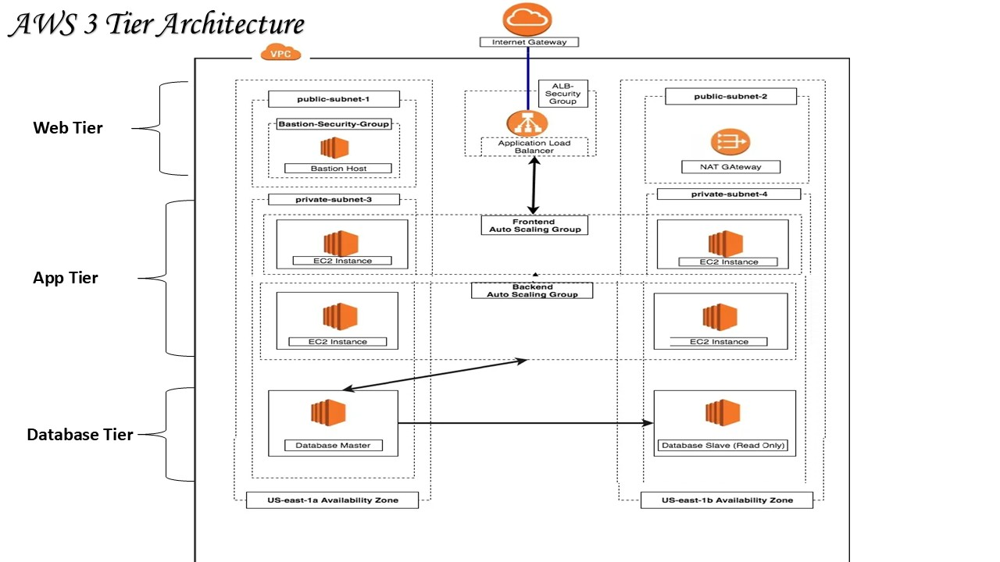
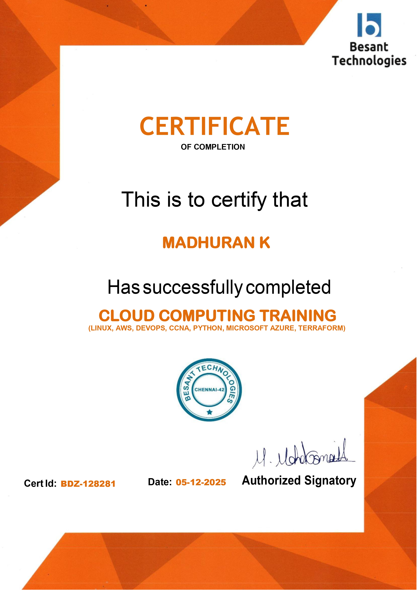
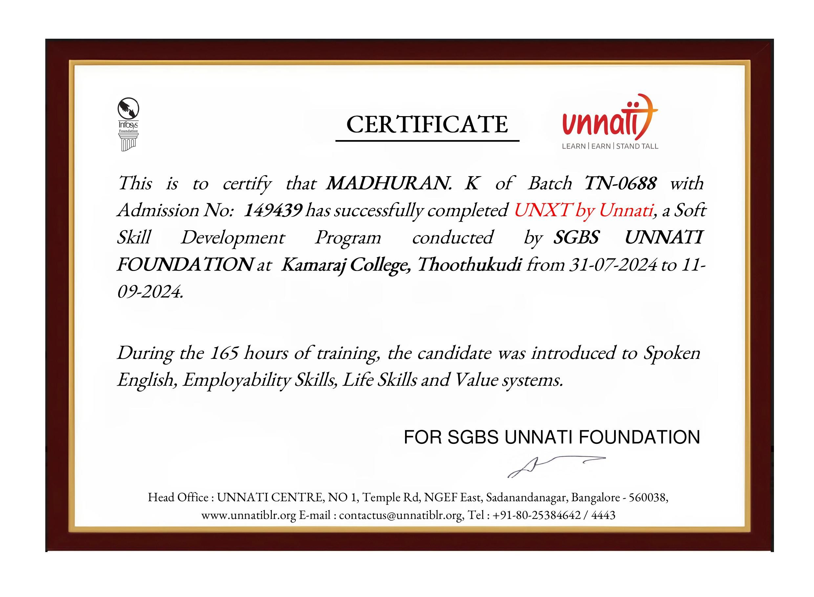
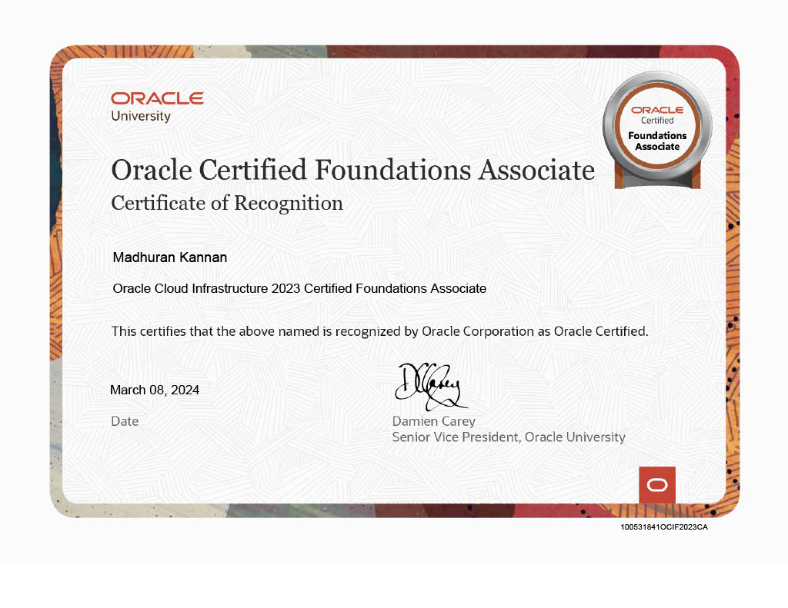
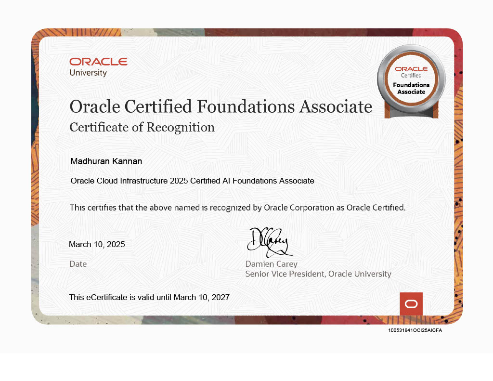

AWS Cloud and DevOps Engineer with 1 year of combined experience in Amazon Web Services (AWS) cloud engineering, Linux infrastructure support, CCNA networking, and CI/CD pipelines.
AWS Cloud and DevOps Engineer with 1 year of combined experience in Amazon Web Services (AWS) cloud engineering and Linux infrastructure support. Completed a 6-month AWS Cloud Engineer internship creating and validating cloud infrastructure for production-like environments and supporting production AWS infrastructure with senior engineers.
Currently working as a Technical Support Engineer administering Linux servers and collaborating with clients to connect hosting servers with AWS, database, and application servers for production applications. Hands-on with EC2, VPC, IAM, ALB, Auto Scaling, RDS, CI/CD (Jenkins), Docker, Kubernetes, Apache, Nginx, DNS, and SSL/TLS. Seeking DevOps Engineer, AWS Cloud Engineer, Linux Administrator, or Site Reliability Engineer (SRE) roles.
Network protocols, traffic routing, security firewalls, and hybrid connectivity.
Scalable multi-AZ cloud architecture, security, and edge acceleration.
Enterprise OS management, process diagnostics, file permissions, and CLI triage.
Continuous integration, continuous deployment, containerization, and observability.
Web application serving, database installation, user management, and backups.
Hosting control panel management, mail deliverability, scripting, and remote tools.
March 2026 – Present | Bengaluru, Karnataka
August 2025 – January 2026 | Bengaluru, Karnataka
Scalable Web Applications
▶ CI/CD Pipeline Demo – Jenkins, Docker, K8s
Terraform, Jenkins & Ansible (IaC)
▶ CI/CD + Terraform + Ansible Deployment Demo
Multi-AZ Cloud Infrastructure

▶ AWS 3-Tier Architecture Blueprint

AWS Cloud, DevOps, Terraform, CCNA, Linux, Python — Besant Technologies (2025)

Unxt Udhyogam – Soft Skills Program (Infosys-sponsored)

Oracle Cloud Infrastructure — 2024

Oracle Cloud Infrastructure AI — 2025
Seeking DevOps Engineer, AWS Cloud Engineer, Linux Administrator, or Site Reliability Engineer (SRE) roles.